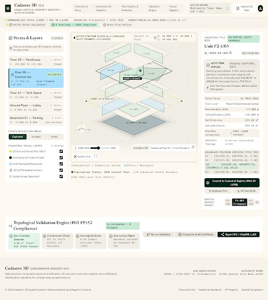
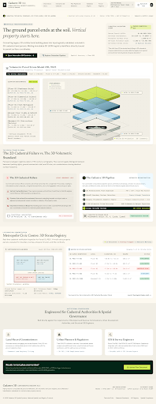
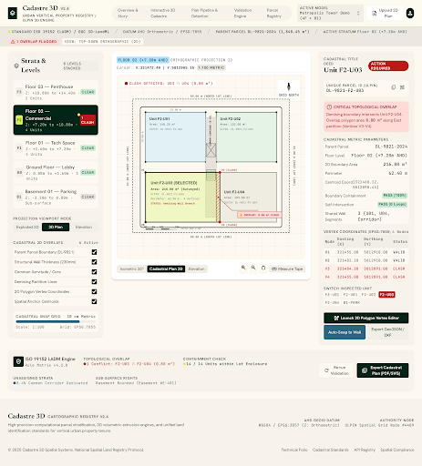
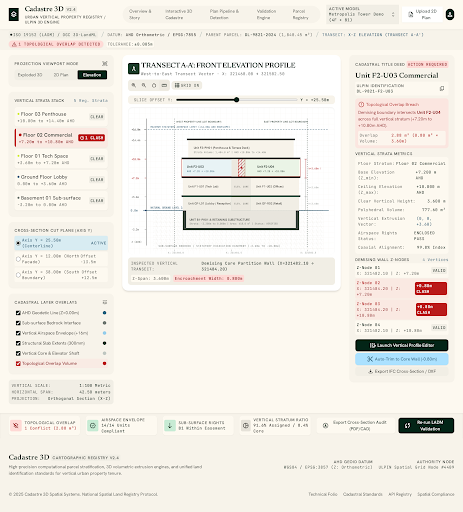
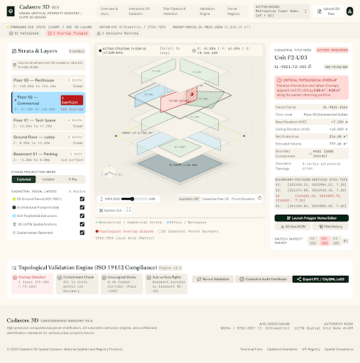

FLAGSHIP SCREENInteractive 3D Cadastre Viewer
Auto-trimmed & validated 3-column architectural workspace: strata & layer selector, live 3D Three.js viewport with coordinate telemetry, and per-unit cadastral record panel.

EDITORIAL STORYOverview & Cadastral Story
Archival presentation folio framing the vertical property crisis, 2D cadastral parcel decomposition, and the journey from paper blueprints to sovereign 3D strata records.

CV PIPELINE2D Cadastral Plan Viewer
Plan upload and computer-vision vectorization interface showing detected wall contours, unit boundaries, room identification tags, and polygon verification metrics.

VERTICAL DATUMElevation & Cross-Section
Orthographic vertical slice inspecting Z-elevations, floor-to-floor clearances, underground basement depths, and topological strata continuity across levels.

EXPLORER VIEWBase Interactive 3D Viewer
Standard 3D volumetric model visualization showing extruded property units, floor stack controls, selection highlights, and spatial coordinates.
Vertical Cadastre Editorial
Palette, typography (Newsreader + Hanken Grotesk + JetBrains Mono), spacing rhythms, component guidelines, and spatial chips documented in markdown.